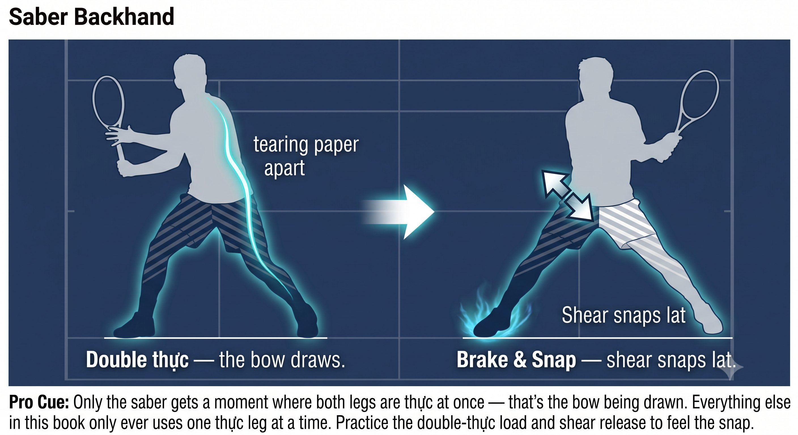

Chapter 17: Hu Thuc Footwork
(English version of Chapter 17 in the United Tennis Handbook)
CHAPTER 17

Figure 1
HƯ THỰC FOOTWORK
Empty-Full Switching
Rooting was never static. It switches. Hư thực is what makes you stable and mobile at the same time.
Figure 17.1: Never 50/50, except for one airborne instant. This is the weight-shift engine behind every step on the court.

Figure 2
Hư is empty — light, yin, ready to move, about 20 to 30 percent of the weight. Thực is full — heavy, yang, rooted, about 70 to 80 percent of the weight. Tennis is never 50/50. 50/50 is dead weight.
— Henry Pham
What Hư Thực Is
Tennis is never played 50/50 — that split has no root and no brake in it. Elite players are always in hư thực, switching instantly between the two.
The Principle
Rooting was never static. It switches. Hư thực is what makes you stable and mobile at the same time.
Hư Thực in Tennis Footwork
1. Split Step — Double Hư, Ready to Become Thực
In the air, both legs are hư. On landing, you read the ball:
– Ball to the forehand: the right leg becomes thực (roots and screws in) while the left leg stays hư (light, adjusting).
– Ball to the backhand: the opposite happens.
– Land 50/50 and you have to shift before you can even move. Land with clear hư thực and you push instantly off the thực leg.
2. Forehand Push — the Hư Thực Switch Is the Power
– Load: the back leg is thực — the tripod screws in, the arch lifts, the spiral line loads. The front leg is hư — the toe lightly touches, the knee stays soft, ready to step or brake.
– Crossover of the figure-8: as the racket drops inside, weight begins to transfer — the back leg turns more hư, the front leg turns more thực.

Figure 3
– Brake and pulse: the front leg becomes thực instantly — a hard screw, a pillar, the brake. The back leg is now hư — the heel lifts, free to rotate. That hard switch from back-thực to front-thực is exactly what creates the one-inch pulse.
Coach's Note
If the front leg stays hư, there's no brake — you fall backward with no impulse. If the back leg stays thực too long, you can't transfer weight, and you end up muscling the shot with the back leg instead.
Figure 17.2: The load and the brake are the same two legs, just with the weight reversed. That reversal — not the arm — is where the pulse comes from.

Figure 4
3. Saber Backhand — Double Thực for an Instant, Then Switch
The backhand needs more side-on stability:
– Load: both legs go briefly thực — feet like tearing paper apart, a wide base, a deep root. This momentary double thực creates a huge stretch in the back line, like drawing a bow.
– Pulse: the front leg stays thực, holding the side-on position and preventing the chest from opening, while the back leg turns hư and pushes. The shear between a thực front leg and a hư back leg is what snaps the lat — the saber pulse.
This is exactly why the one-handed backhand looks so rooted — that moment of double thực.
Figure 17.3: Only the saber gets a moment where both legs are thực at once — that's the bow being drawn. Everything else in this book only ever uses one thực leg at a time.
4. Recovery — Hư to Move Again
After the pulse, the front leg that was thực has to become hư instantly — light again, so you can push back to center. Stay thực there and you're stuck at the net after the attack.
So the cycle runs: hư-hư (the split) into back-thực/front-hư (the load) into front-thực/back-hư (the brake and pulse) into hư-hư (recovery) — continuous change, never 50/50.
How Hư Thực Connects to Everything Built So Far
Figure 17.4: Two stances, same grip, same racket. One of them can move in any direction instantly. The other has to shift its weight first — and that shift is the difference between ready and late.
Training Hư Thực: Feel Empty and Full
1. Slow Walk — Cat Step:
– Walk on court in your hitting stance using only hư thực, never 50/50.
– Lift the hư foot — if you wobble, you were 50/50, not truly thực on the standing leg.
– Every step, the standing leg has to be fully thực, tripod screwed in. This is the internal-arts cat walk.
2. Shadow With a Freeze:
– Shadow-swing a forehand and freeze at the load. Check: is the back leg thực? Can you lift the front foot without falling? If not, it wasn't thực.
– Freeze at the brake — can you lift the back foot? If not, the front leg wasn't thực either.
3. Calling Hư Thực:
– Have a partner feed balls while you say out loud "back thực" at the load and "front thực" at contact.
– This forces awareness. After 10 balls, whisper it, then go silent.
4. Power Regulation Through Hư Thực:
– 20% touch: a shallow thực — about 30% root, soft.
– 50% rally: a medium thực — about 70% root.
– 100% pulse: a deep thực — a full screw, a hard brake.
– Same figure-8, same 45 degrees — only the depth of thực changes.
BRUCE LEE'S ONE-INCH PUNCH: THE BACK LEG GOES THỰC INTO THE GROUND, THE FRONT LEG STAYS HƯ TO ALLOW THE HIP THROUGH, THEN AN INSTANT FRONT-THỰC BRAKE PRODUCES THE PULSE.
The Rule
Hư thực makes you stable and mobile at once — rooted like a tree, light like a cat.
The Hư Thực Checklist
BACK THỰC ROOT. HEAD STILL. EYES PARKED. SMALL 8 ON THE 45° GLASS. SWITCH TO FRONT THỰC BRAKE. ONE-INCH PULSE.
– Split step: a double-hư landing switches instantly to thực on the correct leg.
– Forehand load: back thực (screwed in), front hư (light).
– Forehand brake and pulse: front thực (a hard screw, a pillar), back hư (free).
– Backhand load: double thực (wide, tearing paper apart).
– Backhand pulse: front thực holds, back hư pushes — the shear between them snaps the lat.
– Recovery: front thực switches instantly to hư so you can move.
– Power regulation: 20% is a shallow thực, 50% is a medium thực, 100% is a deep thực.
Where This Leads
This chapter establishes hư thực — empty-full switching — as the variable in Q-V-ROOT-8-45-Impulse-Jin CORE. Chapter 18 covers rooting. Chapter 19 covers the forehand push system. Chapter 20 covers the one-handed backhand saber. Chapter 21 covers the two-handed backhand hybrid.